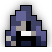
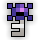
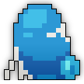
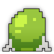
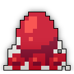
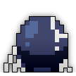

| Last updated: Exalt Version 5.13.0.0 (June 2025) |
|---|
 Music: Chelicerae Music: Chelicerae
|
| Dust Drops | ||
|---|---|---|
| 37-43 |
41-47 |
0 |
The Crawling Depths is a high-level dungeon that is a much more difficult version of the Spider Den.
This dungeon is a source of Greater Potions of Defense and Greater Potions of Wisdom. It is also the source of the untiered Doku no Ken, the Mace of the Depths and the Spider Silk Bow.
The portal to The Crawling Depths has a chance to drop from the Sting Spider, Spore Spreader, Critter Brood and Blood Hound.
This dungeon must be completed to earn ‘Explosive Journey‘, ‘Epic Battles‘, ‘Hero of the Nexus’ and ‘Realm of the Mad God’ fame bonuses.
| The Realm Eye says: |
|---|

After Arachna exiled her son, he stole hundreds of her unhatched eggs and carried them further inland. Burrowing deep into the tough mountain soil, he raised his siblings to be capable fighters and defend their new subterranean lair. The banished son has gradually amassed an army of spider warriors. He craves the opportunity to exact revenge on his mother. |
 The Crawling Depths Key is available in the Nexus for 100  .
.
See the The Crawling Depths Guide for a complete walk-through on the dungeon and all its enemies.
The layout and aesthetics are mostly identical to the Spider Den, in that the dungeon is a modestly-sized cavern consisting of a series of circular rooms linked by short hallways. There are no branching paths possible. Unlike the Spider Den, there will be a destructible web block wall at the boss room entrance, and a treasure room with multiple orange stalagmites may spawn in the path.
There is a chance to find a treasure room, a large circular room containing many Glowing Eggs that have a small chance to drop loot that the boss would have dropped. Multiple of these can exist in one The Crawling Depths, but they are not guaranteed to appear.
|  Blue Son of Arachna Giant Egg Sac |
 Green Son of Arachna Giant Egg Sac |
 Red Son of Arachna Giant Egg Sac |
 Silver Son of Arachna Giant Egg Sac |
The Crawling Depths is part of the Mighty Quest pool from The Tinkerer and has three associated quests.
| Name | Description | Items Needed | Reward |
|---|---|---|---|
| The Prodigal Son | Defeat the Son of Arachna in the Crawling Depths. |  |
|
| Epic Showdown | Slay Jon Bilgewater, the Son of Arachna, and the Murderous Megamoth to be rewarded. |   |
|
| Exterminate! | Get rid of those overgrown insects! |  |
The Crawling Depths is a simple maze with only one real pathway - so you won’t get lost here - but you do want to watch out for all the Crawling Spider Hatchlings that spawn from the egg sacs littered across the floor and the other spiders that cause a variety of status effects. If you’re not in a rush, it’s usually worth it to be cautious and clear each room before progressing to the next room.
Like some other dungeons, the entrance to the boss room always faces south. Before the boss room, there is a web wall that will cause rushers to spend some time breaking down the wall before entering into relative safety. This wall does not regenerate health, so take it down and enter into the Son of Arachna’s Lair!
Boss Strategies
When in the boss room, try to clear all the eggs surrounding the room first. If you don’t, then you’ll have a harder time trying to kill the boss. During the boss fight, the Son of Arachna zips around the web while shooting quickly. Around the web are 4 colored eggs in each ‘corner’ that spawn each type of spider encountered in the dungeon itself. After the eggs are destroyed, the boss slows down considerably and its firing speed lowers.
Another way to do the dungeon with multiple people is after clearing the eggs in the boss room half of the people go in the center of the web, and the other go on the outside (with Son of Arachna in the middle). This makes the boss bounce back and fourth so you can sit back and shoot.
This dungeon was added in Release 16.0.0 (Aug 2013) alongside Deadwater Docks and Woodland Labyrinth, comprising the first three “Epic Dungeons”. The original name for this dungeon was: ‘Epic Spider Den’. See the original Crawling Depths here.
Before Patch X.32.4.1 (Jan 2020), the portal had the following sprite:
")
In Exalt Version 1.3.0.0 (Dec 2020), this dungeon along with the Toxic Sewers and Woodland Labyrinth received complete reworks, changing almost all content within the dungeon.
Before Exalt Version 5.11.0.0 (May 2025), dungeon completion gave 45-104  with 60% chance, 13-31
with 60% chance, 13-31  with 50% chance and 10-22
with 50% chance and 10-22  with 40% chance.
with 40% chance.
Before Exalt Version 5.12.0.0 (June 2025), dungeon completion gave 34-40  and 32-38
and 32-38  .
.


{kind=link}